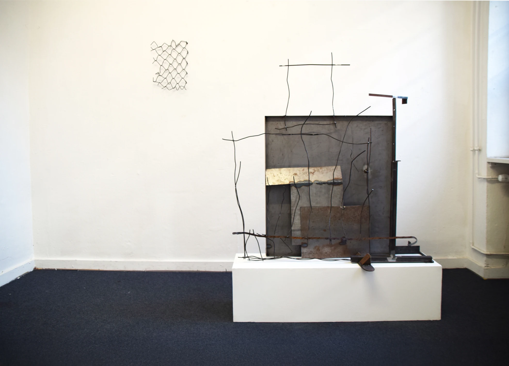
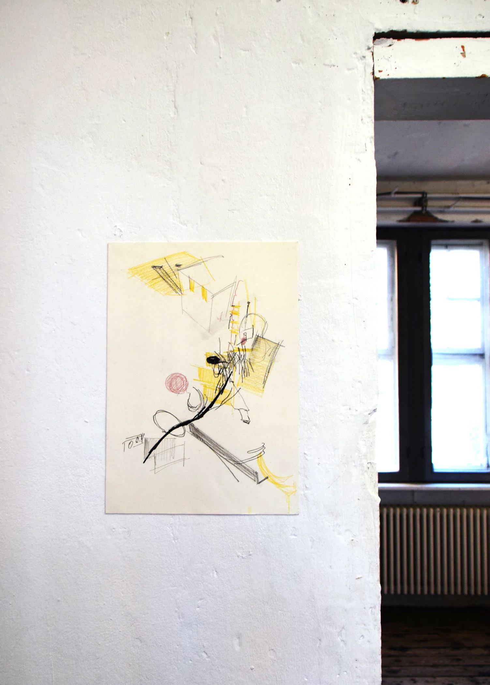
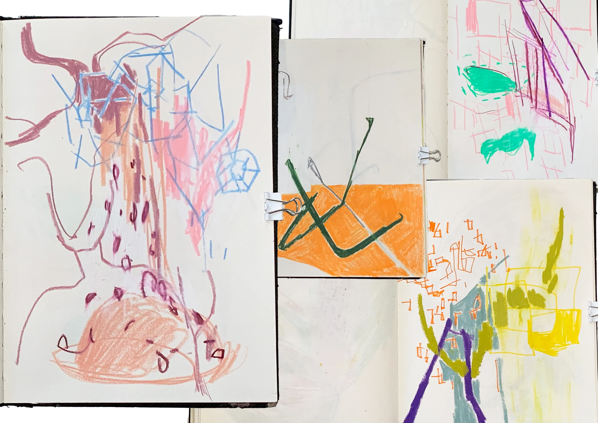

Recomposition – Atelier 3
2022
Sculpture · Steel

Recomposition – Atelier 3
2022 · 철 · 약 128 × 120 × 85 cm2022 · Steel · approx. 128 × 120 × 85 cm
카를스루에의 단체전 《Metall? Metall! XYZ》에서 전시Shown in the group exhibition Metall? Metall! XYZ in Karlsruhe

